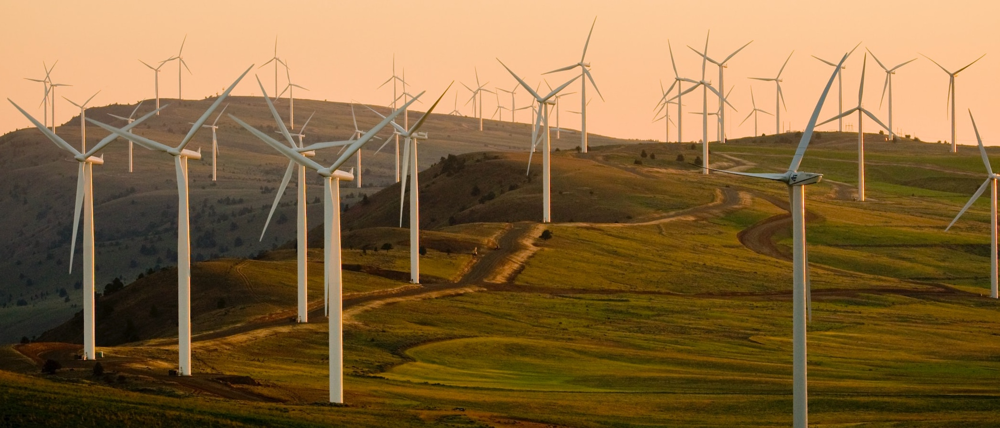
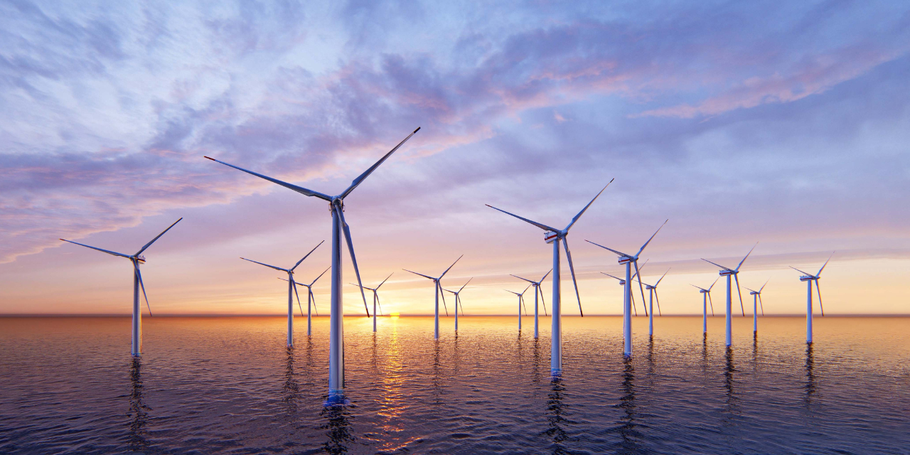

Intro

WindSightAI is a revolutionary platform that combines artificial intelligence, machine learning, and geospatial analytics to solve complex environmental challenges. It employs a unique AI agent framework capable of autonomous data analysis, simulation, and reporting. This technology empowers stakeholders across industries to make informed, data-driven decisions while prioritizing sustainability.
The platform's adaptability is its greatest strength, handling diverse data formats and complex scenarios with ease. WindSightAI can ingest multi-modal datasets, perform real-time analyses, and generate actionable insights. Whether optimizing wind farm locations, forecasting climate impacts, or analyzing biodiversity metrics, WindSightAI sets a new standard for environmental intelligence.
WindSightAI is not just a tool; it's a transformative approach to environmental problem-solving. By integrating advanced machine learning algorithms with intuitive user interfaces, the platform bridges the gap between technical complexity and practical application. This ensures that actionable insights are accessible to researchers, policymakers, and industry leaders alike.
As global challenges grow increasingly complex, WindSightAI is designed to evolve. Its modular architecture and future-ready AI integrations make it a resilient solution for addressing both current and emerging environmental issues. This adaptability ensures that WindSightAI remains a leader in the field of climate and environmental intelligence.
AI Agent Framework

The AI Agent Framework is the cornerstone of WindSightAI. This modular system enables autonomous environmental analysis by deploying intelligent agents, each specialized for specific tasks. These agents work collaboratively, leveraging their unique capabilities to deliver comprehensive insights.
OpenAI’s GPT models are integral to this framework, providing natural language understanding and reasoning capabilities. These models enable users to interact with the system through conversational queries, making complex analyses accessible to non-technical users. Additionally, the framework is designed to integrate other large language models (LLMs) to enhance data synthesis, pattern recognition, and predictive accuracy.
Future iterations will incorporate reinforcement learning to optimize agent decision-making processes. This will allow the system to improve over time, adapting to new data and evolving requirements. The addition of multi-modal capabilities will further enhance the framework, enabling agents to analyze images, videos, and real-time sensor data alongside traditional datasets.
By combining advanced AI methodologies with robust geospatial analytics, the AI Agent Framework not only streamlines environmental analysis but also redefines it. Its ability to scale from localized studies to global simulations makes it a powerful tool for addressing a wide range of environmental and climate challenges.
Research Origins

WindSightAI traces its roots to a groundbreaking academic project aimed at optimizing wind farm placement. By analyzing geospatial data, wind patterns, and environmental constraints, the research demonstrated the potential of AI to revolutionize renewable energy strategies.
This early work highlighted the value of integrating machine learning with geospatial datasets, leading to the development of models capable of predicting optimal locations for wind farms. These models accounted for factors such as wind speed, land use, and environmental impact, providing a holistic approach to sustainable energy planning.
Building on this foundation, WindSightAI expanded its scope to address broader environmental challenges. The lessons learned from wind energy optimization now inform applications in urban planning, biodiversity conservation, and disaster response. This evolution underscores the platform's versatility and its commitment to solving real-world problems.
Today, WindSightAI continues to draw inspiration from its research origins, combining rigorous academic principles with cutting-edge technology. This ensures that the platform remains both innovative and grounded in scientific integrity.
Challenge and Solution

Climate change, resource scarcity, and environmental degradation are among the most pressing challenges of our time. Traditional methods of analysis often fall short in addressing these issues due to their complexity and the sheer volume of data involved.
WindSightAI addresses this gap by leveraging AI to automate and enhance environmental analysis. Its AI agents can process vast datasets, identify patterns, and generate actionable insights with unparalleled speed and accuracy. This enables stakeholders to make informed decisions that balance economic, environmental, and social considerations.
The integration of OpenAI models further enhances the platform's capabilities, allowing it to interpret unstructured data, generate detailed reports, and provide nuanced recommendations. By combining advanced analytics with intuitive user interfaces, WindSightAI democratizes access to powerful tools, empowering users across sectors to tackle complex challenges effectively.
In essence, WindSightAI transforms challenges into opportunities, providing a scalable, adaptable solution for addressing the multifaceted problems of climate change and sustainability. Its ability to evolve alongside emerging technologies ensures that it will remain a leader in environmental intelligence.
Key Features

WindSightAI offers a suite of advanced features designed to streamline and enhance environmental analysis:
- Autonomous Analysis: AI agents independently perform complex tasks such as climate modeling, resource allocation, and impact assessment, minimizing the need for manual intervention.
- Scalable Architecture: The platform can handle datasets of any size, from localized studies to global simulations, ensuring flexibility and adaptability.
- Advanced Visualization: Generate interactive dashboards, 3D models, and heatmaps to communicate insights effectively to diverse audiences.
- Real-Time Insights: Equipped with real-time analytics capabilities, WindSightAI is ideal for time-sensitive applications such as disaster response and policy evaluation.
- Integration with OpenAI: The use of GPT models and other LLMs enhances data interpretation, report generation, and user interaction, making complex analyses accessible to all.
These features make WindSightAI a versatile and powerful tool for addressing the diverse challenges of environmental management and climate resilience.
Socials